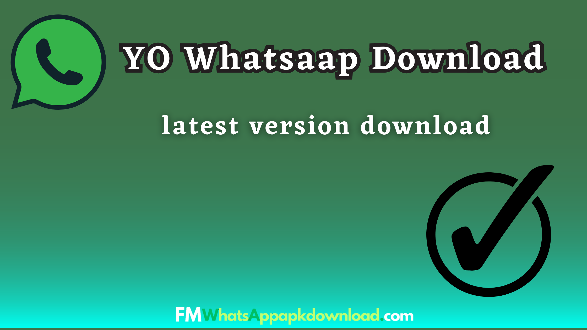

WhatsApp Yo APK (Official)
In the realm of instant messaging apps, WhatsApp has emerged as a dominant force, connecting billions of people around the globe. While the official version of WhatsApp offers a myriad of features...

In the realm of instant messaging apps, WhatsApp has emerged as a dominant force, connecting billions of people around the globe. While the official version of WhatsApp offers a myriad of features...
In the rapidly evolving digital landscape, messaging applications have become an indispensable part of our everyday lives. WhatsApp, a global leader in the messaging platform arena, continues to...
In the ever-evolving world of instant messaging, WhatsApp has undoubtedly cemented its position as the go-to platform for millions of users worldwide. While the official version of WhatsApp offers...
In the ever-evolving world of instant messaging, WhatsApp has emerged as a household name. With its user-friendly interface and robust features...
In the realm of messaging applications, WhatsApp has always held a prominent position, garnering immense popularity and user satisfaction...